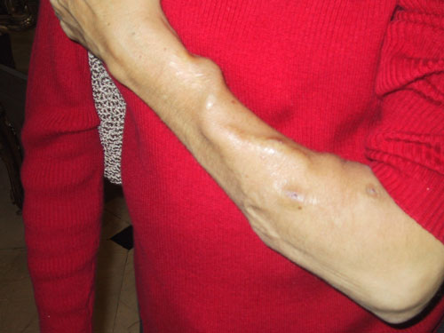

nephron.org
nephron.org

Home dialysis is a viable option for many patients, and so is self cannulation with the button-hole technique. This story is a testimonial to nocturnal home dialysis and a great resource and inspiration for anyone considering this modality. Ms. Weintraub is an educator in Los Angeles, a founder of aakp Los Angeles and a member of the (national) AAKP Board of Directors. - Dr. Fadem
I am what you may describe as a seasoned dialysis consumer. I visited dialysis units to do my therapy thrice weekly for over fifteen years and did CAPD at home for more than twelve years. After a misadventure with a transplant (that appears to be a pattern with me), I returned to the world of hemodialysis. After much research, I decided that nocturnal home hemodialysis was the therapy of choice for me. My unit wouldnt set up a home training program. I found one that would. My doctor wrote a letter of justification to cover the fourth treatment per week and my new dialysis center agreed to absorb the costs of additional weekly treatments (theres no overhead or staff expenses at home and the dialyzers cost twenty-something dollars a pop). One year later, I was in business.
Everyone has his individual strengths and challenges. For me, I had to factor in my hearing loss. Without my hearing aid, I hear very little. Add the fact that Im a very sound sleeper to the equation and the result is a potential earthquake with the machine shutting down and me not having a clue. Though some have reported doing dialysis alone at home, it was fairly easy to determine that I required another set of ears in the room.
Next, I had to factor in my somewhat rickety joints. Not too many folks with lots of amyloid build-up in their system (from decades of dialysis) switch to home hemodialysis. But that was my plan. With compromised hand function, there were certain tasks that were difficult: lifting the heavy jugs, connecting the Hanson lines, spiking the saline bags, closing certain clamps. It was clear that I would also need an extra set of hands.
There was one thing I did have. It was the passion and determination to see this through. I found two wonderful people willing to help me, and the adventure began. Initially there were a few mishaps that were tremendous learning opportunities. The will to do this sustained me through the biggest hurdles. For months I had trouble sleeping. My shoulder would get inflamed. I had difficulty finding a comfortable position. I woke up about every hour and stared at the machines computer screen, checking all the levels and looking at the amount of treatment time that remained. Then Id fall asleep just before the treatment ended and wake up exhausted. I suffered from sleep deprivation and was not a happy camper. I consulted with my nurse and doctor. We decided I would start playing around with the times to try to find the balance that would provide both excellent dialysis and restful sleep. I tried dialyzing from the evening into the night, ending in the middle of the night and returning to sleep. I hated that. I tried dialyzing three nights alternated with two mornings. That worked for a while but it began to feel that all I was doing was dialyzing. One night, after a particularly exhausting day, I asked my helper to turn the machine away from me. I closed my eyes and almost immediately fell asleep. The next morning I awoke, shocked to realize that I had slept through the night. This radical shift, I believe, was the shift from deep within my subconscious. I was not a sleeper during all my years of in-center hemodialysis. The machine faced me and I tended to it during my run. It gave me peace of mind to know how to adjust all the controls and handle any alarms. I prevented many a mishap that way. I was doing the same thing at home. But then I realized something. We were so meticulous in the set-up that MO, my machine, almost never alarmed during the run. That night, I had developed faith in the process and in my self. After a year of struggle, I stopped resisting and turned a major corner.
There is a Zen-like aspect to the initial set up. Everything drops away as my helper and I move through the process. We approach each treatment as if we are doing it for the first time. We are mindful of our actions and focused on the job at hand.
Especially the sticking of the needles. I have an A-V fistula that was created in 1975. One year later, I learned how to insert the needles. After more than a decade of doing CAPD, I wasnt sure if I remembered how to do it when I returned to hemodialysis. I did. But by this time, I had lost a significant amount of fine motor ability in my hand and it was tougher to grasp the needle. I researched the buttonhole technique. I was trained in the school of site rotation and the concept of a buttonhole went against my principles. Yet the idea of creating a tunnel that would result in painless sticks and an overall decrease in scar tissue was very appealing, considering the type of therapy I was now doing. I thought about this as I inserted the needles for each treatment. Where do I place the buttonholes? How do I choose the optimal spots? My fistula is precious to me and I did not want to do anything to cause it harm. One day I placed the needle in a spot where I felt no pain and thought the angle was just right and I simply knew. For the next several treatments I returned to that particular spot and by the fourth time, it slid in. The scabs thats a whole other story. The buttonhole technique requires that you remove the scab from your previous visit to the site- kind of like lifting up the door. It is a practice that takes focus- sometimes easy and quick and other times challenging. I use the side of the tip of an 18-gauge needle and with the help of a mini flashlight the my helper shines directly on the site, I go for it.
Ive heard that one secret of life is to learn to like what you do and do it completely with all of your attention. In a way the needle insertion is like a meditation practice. I am in the moment, engaged in the task at hand and all other thoughts fall away. As with any dialysis practice, there is no place for short cuts. I prep the sites meticulously with alcohol wipes. Excellent technique is a powerful prevention tool. Establishing the buttonholes and doing routine scab removal has been challenging at times but mostly straightforward once I developed the knack. Overall, buttonholes are an excellent investment in my well-being and peace of mind.
Its now over two years that I do nocturnal home hemodialysis. After lots of experimentation and with the full support of my doctor and nurse, I have discovered a schedule that works best for me given my logistics (the machine not being in my home and needing a helper). I dialyze an average of nine hours for four nights a week at my sisters home. I dont skip more than one night and dont dialyze more than two nights in a row. My chemistries are excellent. My blood pressure is great. I have not needed phosphate binders in over two years. My joint function has not worsened and may have even improved. I have significantly more stamina. I no longer have to endure feeling sick from the therapy that sustains me either during or after the treatment. This is an awesome thing. It is said that everything we need is already here, just waiting to be discovered. I feel extraordinarily grateful to have discovered the type of dialysis therapy that gives me back the potential to thrive once again.